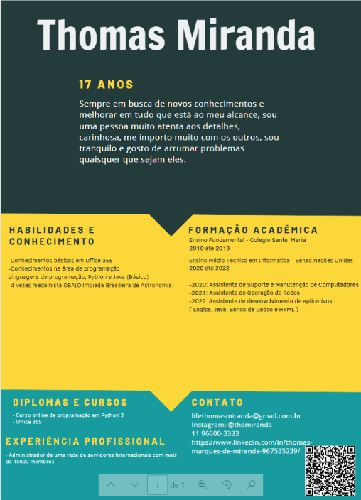

Tecnologia da Informação
Nesse trabalho tínhamos como objetivo realizar um currículo a partir de algum modelo do Canva. Promovendo os nossos conhecimentos para futuros contratantes. Executamos esse trabalho durante as aulas do antigo Professor de Ti Thiago.
